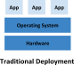
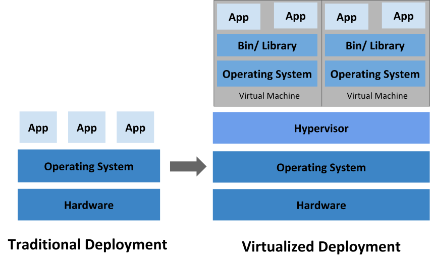
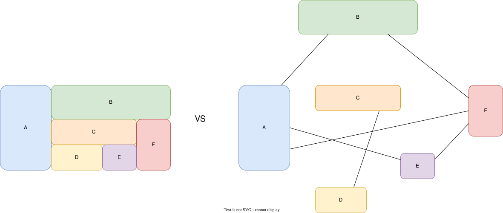
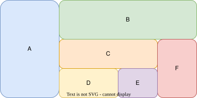
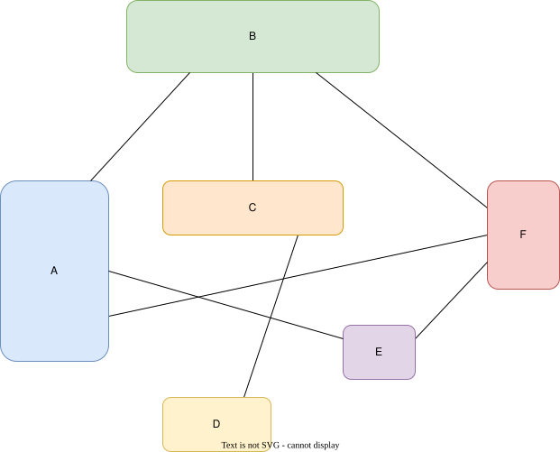
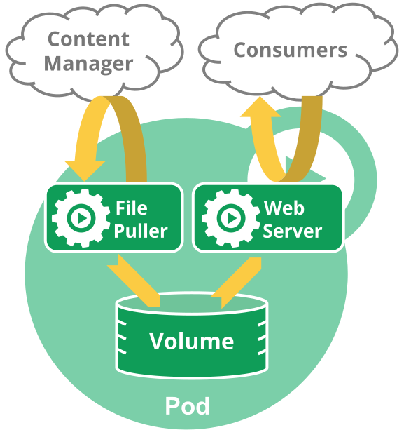

Основные концепции
Эволюция инфраструктуры

Физические сервера

Физические сервера
Минусы
борьба приложений за ресурсы
проблема вертикального масштабирования
неэффективное использование ресурсов
Виртуализация

Виртуализация
ресурсы ограничены параметрами виртуальной машины
простота вертикального масштабирования
возможность более плотного размещения
Контейнеры
Зачем?
Отличие контейнеров от ВМ
изоляция на уровне ОС
запускается только нужное приложение
минимальные накладные расходы
DevOps практики
гибкость создания и развертывания с docker image
одинаково работает при разработке, тестировании и на проде
удобство использования в CI/CD
хорошо подходит для микросервисной архитектуры
Эволюция архитектуры приложений

Монолитная архитектура

Монолитная архитектура
изменения одного компонента требуют редеплой всего приложения
требуются мощные сервера, проблема масштабирования
нельзя масштабировать только нужные компоненты
отказ одного компонента ведет к полной неработоспособности
сложная структура проекта, тяжело заменять компоненты
Микросервисная архитектура

Микросервисная архитектура
можно обновлять независимо
меньше требования к ресурсам, легко масштабировать горизонтально
можно масштабировать только необходимые компоненты
при отказе затрагивает только связанные компоненты
разработка на разных языках и технологиях
Kubernetes
размещение и жизненный цикл контейнеров
масштабирование и распределение нагрузки
конфигурация через декларативное описание
Основные компоненты
control-plane
node components
Control Plane
обработка операций взаимодействия с кластером
управления размещением нагрузки по нодам
отслеживание ресурсов и событий в кластере и их обработка
Control Plane
kube-apiserver
etcd
Control Plane
kube-scheduler
kube-controller-manager
cloud-controller-manager
Отказоустойчивый кластер

Node
kubelet
kube-proxy
container runtime
API Kubernetes
Объект в kubernetes
Конфигурация и состояние нод кластера(Node)
Конфигурация и состояние развертывания приложения(Deployment)
Конфигурация данных для приложения(ConfigMap)
Объект в kubernetes
apiVersion: v1
kind: Pod
metadata:
creationTimestamp: null
labels:
run: nginx
name: nginx
spec:
containers:
- image: nginx
name: nginx
resources: {}
dnsPolicy: ClusterFirst
restartPolicy: Always
status: {}REST
$ kubectl get --raw /
{
"paths": [
"/.well-known/openid-configuration",
"/api",
"/api/v1",
"/apis",
"/apis/",
"/apis/apps",
"/apis/apps/v1",
...
Groups
/api/v1 - core группа, соответствует
apiVersion: v1/apis/$GROUP/$VERSION - именованные группы, соответствует
apiVersion: $GROUP/$VERSION
Scope
# для cluster-wide ресурсов
"/apis/${GROUP}/${VERSION}/${RESOURCE}"
(/apis/apiregistration.k8s.io/v1/apiservices)
# для namespaced ресурсов
"/apis/${GROUP}/${VERSION}/namespaces/${NAMESPACE}/${RESOURCE}"
(/apis/apps/v1/namespaces/default/deployments)Get Object
"/apis/$GROUP/$VERSION/namespaces/$NAMESPACE/$RESOURCE/$NAME"Pod
{kind=link}
Pod - это минимальная единица развертывания
один или несколько контейнеров на одной ноде
общая сеть
общее хранилище
общий набор параметров
apiVersion: v1
kind: Pod
metadata:
name: nginx
spec:
containers:
- name: nginx
image: nginx:1.14.2
ports:
- containerPort: 80$ kubectl apply -f pod.yamlНесколько контейнеров
{kind=link}

apiVersion: v1
kind: Pod
metadata:
name: nginx
spec:
containers:
- name: nginx
image: nginx:1.14.2
volumeMounts:
- mountPath: /opt/nginx/conf
name: conf
- name: reloader
image: config-reloader:1.2.3
volumeMounts:
- mountPath: /opt/nginx/conf
name: conf
volumes:
- name: conf
configMap:
name: confЖизненный цикл

Pod Phases
Pending - под создан, но не назначен на ноду
Running - под назначен и все контейнеры запущены
Succeeded - все контейнеры успешно завершены
Failed - все контейнеры завершены, но хотя бы один неуспешно
Unknown - не удалось определить статус пода
Pod Conditions
PodScheduled - под назначен на ноду
ContainersReady - все контейнеры пода подготовлены
Initialized - все инит контейнеры в поде выполнились успешно
Ready - под готов принимать запросы
Container states
Waiting - подготовительные операции для старта
Running - контейнер запустился и работает
Terminated - контейнер завершился
Container restart policy
Always - при любом завершении контейнера
OnFailure - при некорректном завершении
Never - никогда не перезапускать
Container hooks
PostStart - запускается сразу после создания контейнера
PreStop - запускается непосредственно перед завершением контейнера
Container probes
exec - выполняет команду внутри контейнера
httpGet - выполняет HTTP GET запрос по IP пода
tcpSocket - выполняет TCP проверку по IP и порту
grpc - выполняет вызов удаленной процедуры по протоколу gRPC
Container probes
livenessProbe - определяет, что контейнер работает
readinessProbe - определяет, что контейнер готов принимать запросы
startupProbe - определяет, что приложение в контейнере запустилось
Pod status
status:
conditions:
- lastProbeTime: null
lastTransitionTime: "2023-03-03T14:38:28Z"
status: "True"
type: Initialized
- lastProbeTime: null
lastTransitionTime: "2023-03-03T14:39:31Z"
status: "True"
type: Ready
- lastProbeTime: null
lastTransitionTime: "2023-03-03T14:39:31Z"
status: "True"
type: ContainersReady
- lastProbeTime: null
lastTransitionTime: "2023-03-03T14:38:28Z"
status: "True"
type: PodScheduled
containerStatuses:
- containerID: cri-o://83ae1cecc32ff20bc915438c265bae638b8741c371cd4b3006cbbfbf1aeb255c
image: docker.io/library/nginx:latest
imageID: docker.io/library/nginx@sha256:3f13b4376446cf92b0cb9a5c46ba75d57c41f627c4edb8b635fa47386ea29e20
lastState: {}
name: nginx
ready: true
restartCount: 0
started: true
state:
running:
startedAt: "2023-03-03T14:39:31Z"
hostIP: 172.18.0.3
phase: Running
podIP: 10.244.2.5
podIPs:
- ip: 10.244.2.5
qosClass: Burstable
startTime: "2023-03-03T14:38:28Z"Pod status
$ k get po
NAME READY STATUS RESTARTS AGE
nginx 1/1 Running 0 3d17hPod termination

Конфигурация
$ # kubectl explain pod.<field>
$ kubectl explain pod.spec.containers.image
KIND: Pod
VERSION: v1
FIELD: image <string>
DESCRIPTION:
Docker image name. More info:
https://kubernetes.io/docs/concepts/containers/images This field is
optional to allow higher level config management to default or override
container images in workload controllers like Deployments and StatefulSets.Scheduling
apiVersion: v1
kind: Pod
metadata:
name: nginx
spec:
nodeName: kind-worker
containers:
- name: nginx
image: nginxScheduling
apiVersion: v1
kind: Pod
metadata:
name: nginx
spec:
nodeSelector:
kubernetes.io/hostname: kind-worker
containers:
- name: nginx
image: nginxScheduling
apiVersion: v1
kind: Pod
metadata:
name: nginx
spec:
affinity:
nodeAffinity:
requiredDuringSchedulingIgnoredDuringExecution:
nodeSelectorTerms:
- matchExpressions:
- key: kubernetes.io/hostname
operator: In
values:
- kind-worker
containers:
- name: nginx
image: nginxPod Lifecycle
apiVersion: v1
kind: Pod
metadata:
name: nginx
spec:
restartPolicy: Never
terminationGracePeriodSeconds: 5
activeDeadlineSeconds: 10
containers:
- image: nginx
name: nginxPod Volumes
apiVersion: v1
kind: Pod
metadata:
name: nginx
spec:
containers:
- image: nginx
name: nginx
volumeMounts:
- name: data
mountPath: /data/
volumes:
- name: data
emptyDir: {}Name Resolution
hostname - позволяет задать хостнейм для пода.
subdomain - позволяет задать fqdn хостнейм для пода в виде
hostname.subdomain.namespace.svc.cluster.local.
Name Resolution
apiVersion: v1
kind: Pod
metadata:
name: nginx
spec:
hostAliases:
- ip: "127.0.0.1"
hostnames:
- "foo.local"
- "bar.local"
- ip: "10.1.2.3"
hostnames:
- "foo.remote"
- "bar.remote"
containers:
- image: nginx
name: nginxName Resolution
apiVersion: v1
kind: Pod
metadata:
name: nginx
spec:
dnsPolicy: "None"
dnsConfig:
nameservers:
- 8.8.8.8
- 8.8.4.4
containers:
- image: nginx
name: nginxHosts namespaces
apiVersion: v1
kind: Pod
metadata:
name: nginx
spec:
hostNetwork: true
shareProcessNamespace: true
containers:
- image: nginx
name: nginxService account
apiVersion: v1
kind: Pod
metadata:
name: nginx
spec:
serviceAccountName: default
automountServiceAccountToken: false
containers:
- image: nginx
name: nginxPod Security Context
apiVersion: v1
kind: Pod
metadata:
name: nginx
spec:
securityContext:
runAsNonRoot: true
runAsUser: 1000
runAsGroup: 3000
fsGroup: 2000
containers:
- image: nginx
name: nginxContainers
apiVersion: v1
kind: Pod
metadata:
name: nginx
spec:
imagePullSecrets:
- name: registry-cred
initContainers:
- name: init
image: busybox:1.28
command: ['sh', '-c', 'echo hello']
containers:
- image: nginx
name: nginxКонфигурация контейнера
Image
apiVersion: v1
kind: Pod
metadata:
name: nginx
spec:
imagePullPolicy: Always
containers:
- image: nginx
name: nginxEntrypoint
apiVersion: v1
kind: Pod
metadata:
name: nginx
spec:
containers:
- name: echo
image: busybox:1.28
command: ['sh', '-c']
args: ['echo $PWD']
workingDir: /Ports
apiVersion: v1
kind: Pod
metadata:
name: nginx
spec:
containers:
- image: nginx
name: nginx
ports:
- name: http
containerPort: 80
protocol: TCP
- name: https
containerPort: 443Environment
apiVersion: v1
kind: Pod
metadata:
name: nginx
spec:
containers:
- image: nginx
name: nginx
env:
- name: KEY
value: ENV_VALUE
- name: KEY_FROM_SECRET
valueFrom:
secretKeyRef:
name: config
key: KEY
optional: true
envFrom:
- configMapRef:
name: config
optional: trueContainer Volumes
apiVersion: v1
kind: Pod
metadata:
name: nginx
spec:
containers:
- name: nginx
image: nginx
volumeMounts:
- mountPath: /opt/nginx/conf
readOnly: true
subPath: conf
name: conf
volumes:
- name: conf
configMap:
name: confResources
apiVersion: v1
kind: Pod
metadata:
name: nginx
spec:
containers:
- image: nginx
name: nginx
resources:
requests:
cpu: "500m"
memory: "100Mi"
limits:
cpu: "1"
memory: "200Mi"Container Lifecycle
apiVersion: v1
kind: Pod
metadata:
name: nginx
spec:
containers:
- image: nginx
name: nginx
lifecycle:
postStart:
exec:
command: ["/bin/sh", "-c", "echo > /var/index.html"]
preStop:
exec:
command: ["/bin/sh","-c","nginx -s quit"]Container Lifecycle
apiVersion: v1
kind: Pod
metadata:
name: nginx
spec:
containers:
- image: nginx
name: nginx
startupProbe:
exec:
command:
- cat
- /tmp/healthy
initialDelaySeconds: 5
periodSeconds: 5
readinessProbe:
tcpSocket:
port: 8080
initialDelaySeconds: 5
periodSeconds: 10
livenessProbe:
httpGet:
path: /healthz
port: 8080
httpHeaders:
- name: Custom-Header
value: Awesome
initialDelaySeconds: 3
periodSeconds: 3Container Security Context
apiVersion: v1
kind: Pod
metadata:
name: nginx
spec:
containers:
- image: nginx
name: nginx
securityContext:
readOnlyRootFilesystem: true
privileged: true